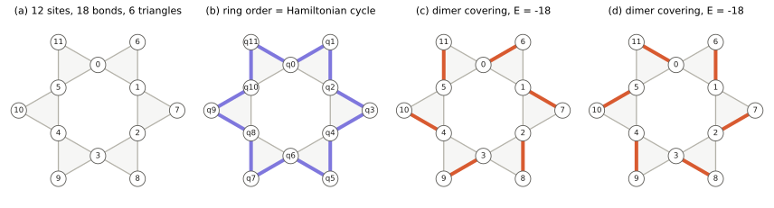
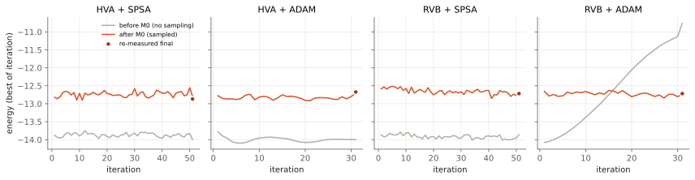
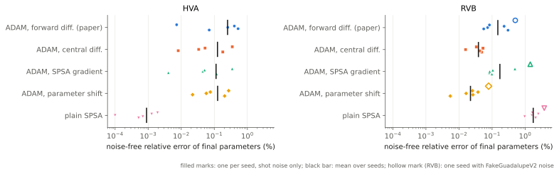
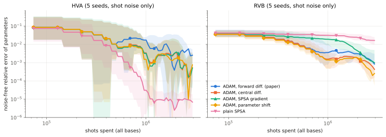
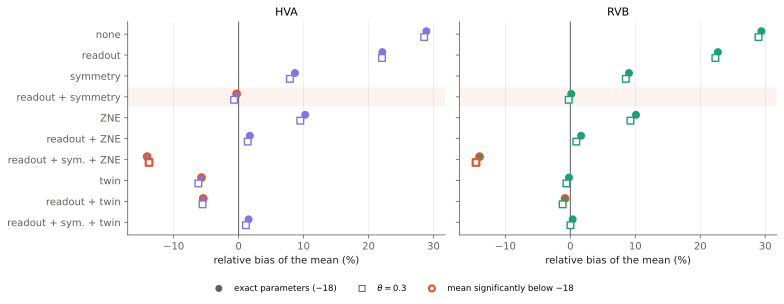
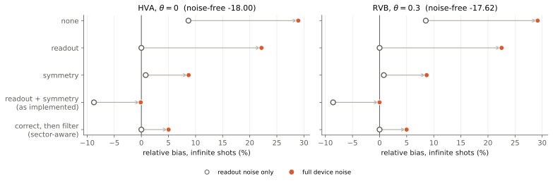
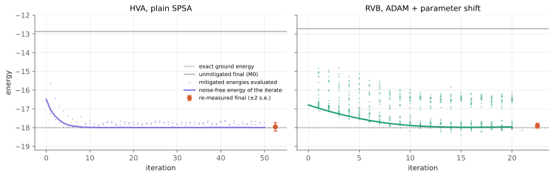

VQE on the 12-site kagome Heisenberg star · IBM Open Science Prize 2022, rebuilt
exact ground energy{{ExactE}}
noisy floor at the exact optimum{{FloorHvaFull}}
CX on Guadalupe{{CxHva}}
Every number in this deck is generated by docsgen from the code and results/; proofs are in the report.
I · the problem
The open kagome star has an exact answer: {{ExactE}}

Triangle bound.
\[ H=\sum_{\langle ij\rangle}(X_iX_j+Y_iY_j+Z_iZ_j)=\sum_{t=1}^{6}H_{\tau_t},\qquad H_\tau=2\vec S_\tau^{\,2}-\tfrac92\ \ge\ -3\ \Rightarrow\ E_0\ge-18 \]
One singlet per triangle saturates every bound: (c) and (d) are the two ground states.
II · why this circuit
Laid along a Hamiltonian cycle, the ring starts in the ground state
ring bonds that are lattice bonds
singlets placed
exact energy of the state
The same circuit in identity order cannot get below {{HvaMinIdentity}}
\[ \mathrm{eSWAP}(\phi)=e^{-i\frac\phi2\mathrm{SWAP}}=e^{-i\phi/4}\,e^{-i\frac{\phi}{4}(XX+YY+ZZ)},\qquad \mathrm{SWAP}=\tfrac12(I+XX+YY+ZZ) \]
RVB: {{ParamsRvb}} angles, one per bond. HVA: {{ParamsHva}} angles, one per layer. Same gates, same {{CxHva}} CX.
Free first step for M4: a parametric 3-CX template for the Heisenberg block, or binding per evaluation.
IV · milestone M0 · honest noisy simulation
The simulator never sampled; fixing it moved the floor by one unit

No sampling: Aer's estimator computed exact expectations, so shots and readout error did nothing.
Seed reuse: a fixed per-row noise pattern became a fake gradient of about {{SeedBugGrad}} that ADAM climbed ({{PreBestRvbAdam}} → {{PreFinalRvbAdam}}).
Biased "best": the trace minimum selects lucky fluctuations; results are now a {{PostFinalShots}}-shot re-measurement.
Reported error bars are {{SpreadRatio}}× too wide; without noise the spread is zero at the optimum
reported std, 1024 shots{{SpreadLowReported}}
real spread, {{SpreadRepeats}} repeats{{SpreadLowReal}}
real spread, 4096 shots{{SpreadHighReal}}
real spread at the optimum, no noise{{SpreadLowZero}}
Zero variance at the optimum.
\[ \sum_{i}z_iz_{6+i}+\sum_{i}\big(z_iz_{i+1}+z_{i+1}z_{6+i}\big)=-6+\sum_i\big(z_iz_{i+1}-z_{i+1}z_i\big)=-6\quad\text{every shot, every basis} \]
V · milestone M1 · better gradients
Parameter shift is exact for every gate here
Parameter-shift rule (Mitarai 2018; Schuld 2019).
For \(U(\theta)=e^{-i\theta G}\) with eigenvalues of \(G\) equal to \(\pm\tfrac12\):
\[ f(\theta)=a+b\cos\theta+c\sin\theta\quad\Rightarrow\quad f'(\theta)=\tfrac12\big[f(\theta+\tfrac\pi2)-f(\theta-\tfrac\pi2)\big] \]
gradient noise per component
forward diff. (ε = {{FdEps}})
central diff.
parameter shift
RVB, equal budget (σB)
{{BudgetFwdRvb}}
{{BudgetCenRvb}}
{{BudgetPsRvb}}
HVA, equal budget (σB)
{{BudgetFwdHva}}
{{BudgetCenHva}}
{{BudgetPsHva}}
energies per gradient, RVB / HVA
{{MEnergiesRvbFwd}} / {{MEnergiesHvaFwd}}
{{MEnergiesRvbCen}} / {{MEnergiesHvaCen}}
{{MEnergiesRvbPs}} / {{MEnergiesHvaPs}}
At equal shots: RVB → parameter shift, HVA → plain SPSA

RVB, ADAM + parameter shift: \({{MIdealRvbPs:m}}\) (shot noise), \({{MNoisyRvbPs:m}}\) (device noise) vs. the paper's \({{MIdealRvbFwd:m}}\), \({{MNoisyRvbFwd:m}}\).
HVA, plain SPSA: \({{MIdealHvaSpsa:m}}\); every ADAM variant stalls near 0.1 %.
RVB was still improving when the budget ran out

VI · milestone M2 · error mitigation
First study: ten stacks at fixed parameters, two look accurate, three overshoot

Every RVB/HVA state is a singlet.
\[ \vec S_{\mathrm{tot}}^{\,2}\ket\psi=0\ \Rightarrow\ \textstyle\sum_\alpha\lVert S^\alpha_{\mathrm{tot}}\ket\psi\rVert^2=0\ \Rightarrow\ |b|=n/2\ \text{in every basis}:\ \text{discard the other shots} \]
Found while documenting: readout + symmetry is accurate only by cancellation

readout noise only, filter then correct{{MxHvaZeroRoRoSymRel}}
gate residual after consistent correction{{MxHvaZeroFullCtfRel}}
full noise, filter then correct{{MxHvaZeroFullRoSymRel}}
Infinite-shot limit of the revised stack: {{MxTwMin}}–{{MxTwMax}} under gate noise, 0 under readout noise. Sampled with a fresh twin per repeat: {{MbRoSymTwinMin}}–{{MbRoSymTwinMax}}, 7 of 8 settings within 2 SEM of the limit; the eighth was a twin fluctuation (new seeds: {{MqRowFullA}}, {{MqRowFullB}}).
Revised-stack runs: good parameters, readings within error, none below −18

re-measured final
noise-free energy of final params
total shots
HVA, plain SPSA
{{MwFinalHvaSpsa}} ± {{MwStdHvaSpsa}}
{{MwIdealHvaSpsa}}
{{MwShotsHvaSpsa}}
RVB, ADAM + parameter shift
{{MwFinalRvbPs}} ± {{MwStdRvbPs}}
{{MwIdealRvbPs}}
{{MwShotsRvbPs}}
Scorecard
milestone
question
answer so far
status
M0
Are the noisy numbers real?
Not before M0. Floor {{PostFinalMin}} to {{PostFinalMax}}: a bias.
done
M1
Most precision per shot?
RVB: ADAM + shift ({{MIdealRvbPs}}). HVA: SPSA ({{MIdealHvaSpsa}}).
done
M2
How much bias can mitigation remove?
Readout → symmetry → twin: {{MbRoSymTwinMin}}–{{MbRoSymTwinMax}} sampled, {{MxTwMin}}–{{MxTwMax}} limit, per error source. First stack: a cancellation.
Open: {{MxTwMin}}–{{MxTwMax}} residual from unequal twin damping; correct-then-filter and the auto twin stop near 20 qubits (M3); hardware checks H0/H1 deferred; the instance is easy, so conclusions need M3.
backup
How the numbers get here
uv run python -m docsgen recomputes physics from kagome_vqe and reads results/; writes data/numbers.json, traces and figures.
uv run pytest docsgen/tests asserts every quoted number, the trace schemas, and that the deck and report use only known keys.
Quoted, not recomputed: the three pre-M0 seed-bug numbers (code no longer exists) and the roadmap's two noisy spread figures.
PDF backup: just slides-pdf (DeckTape, one page per click).